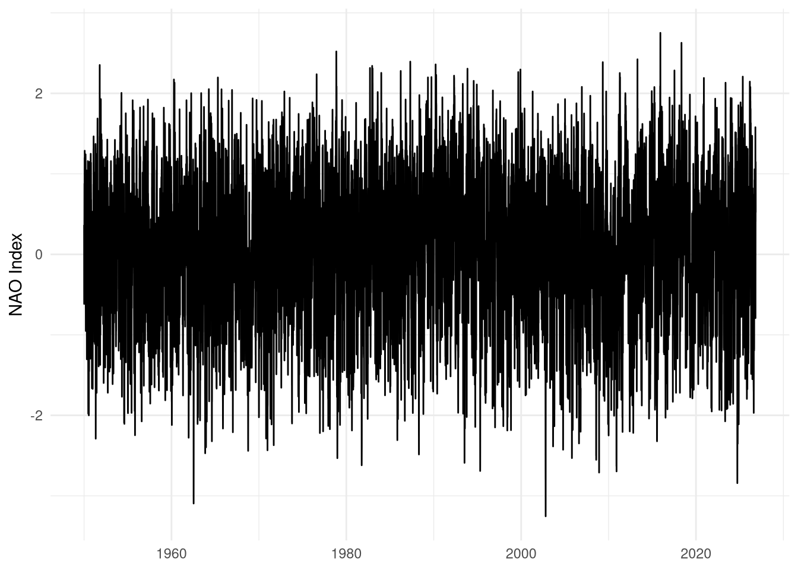
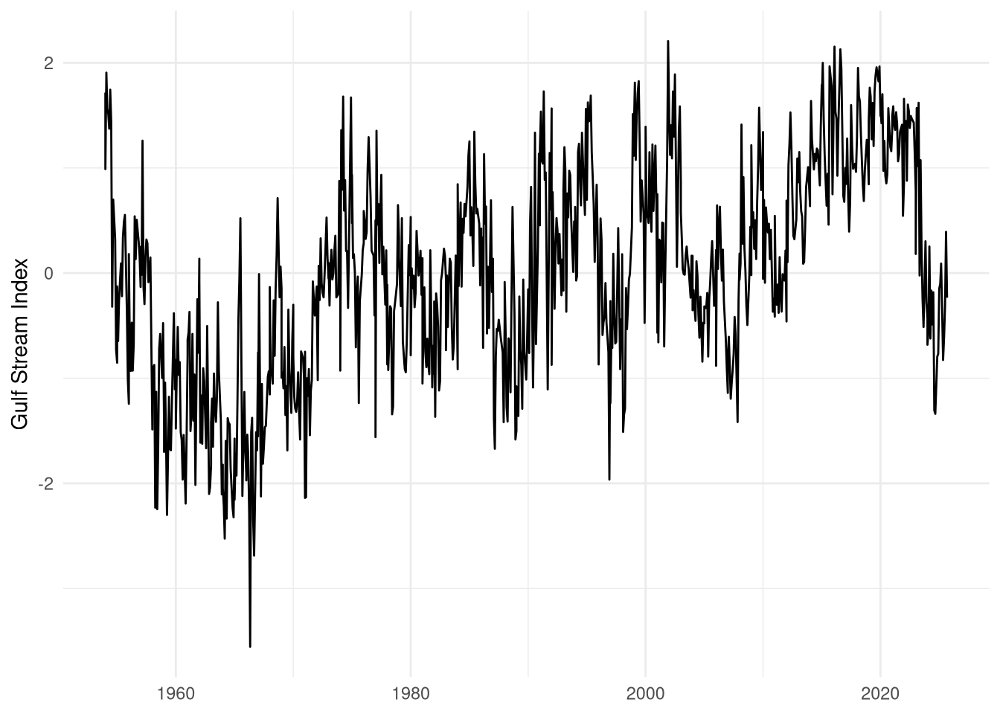
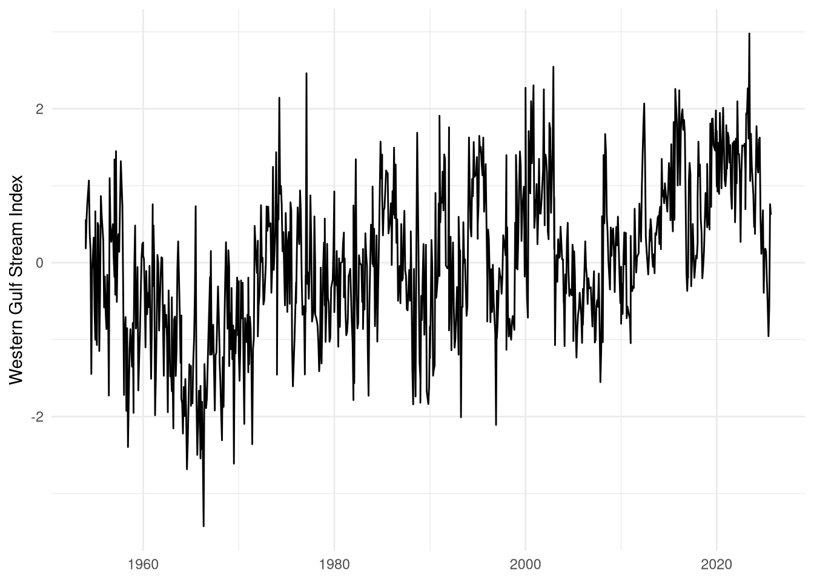
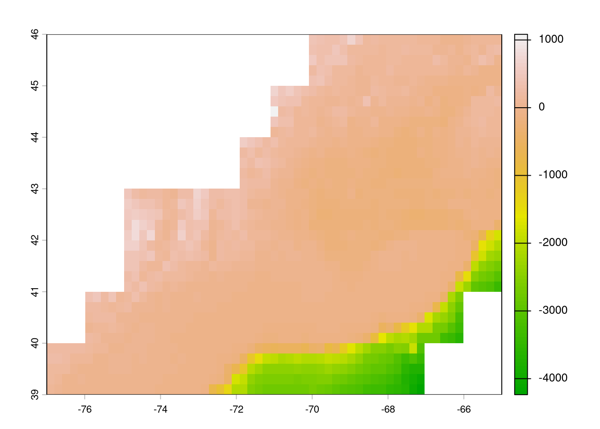
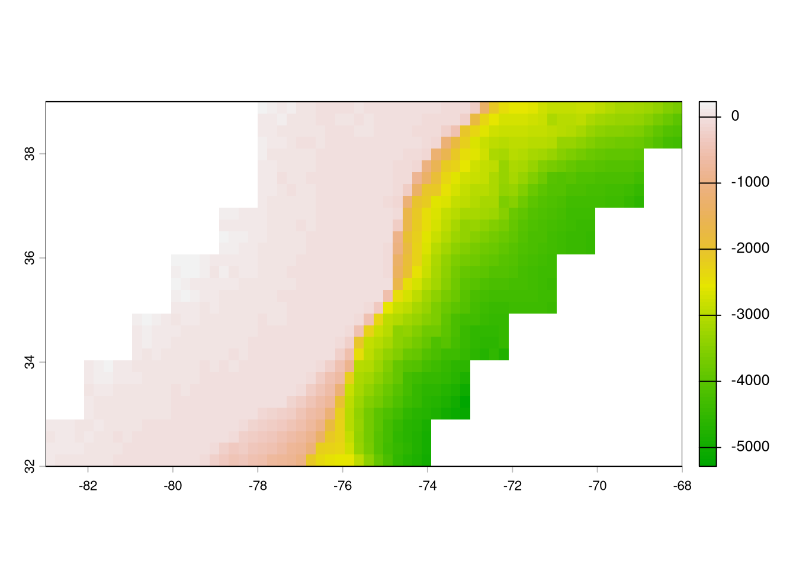
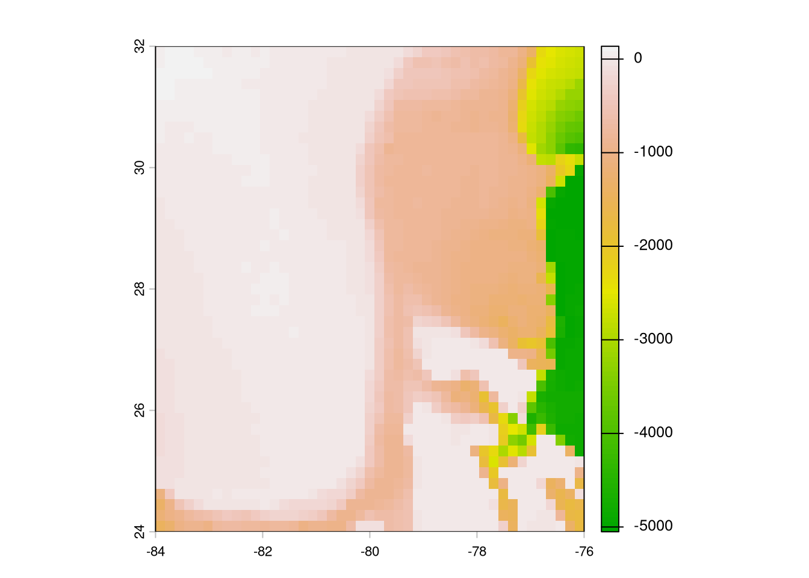
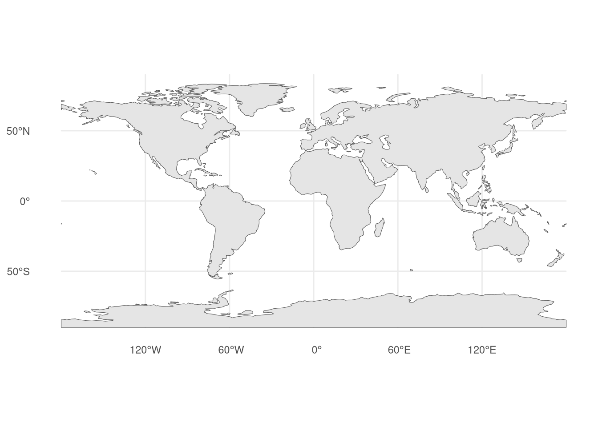
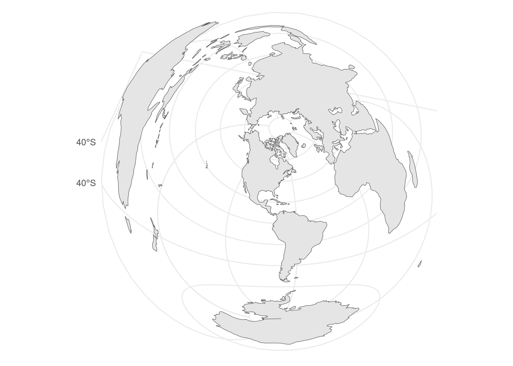
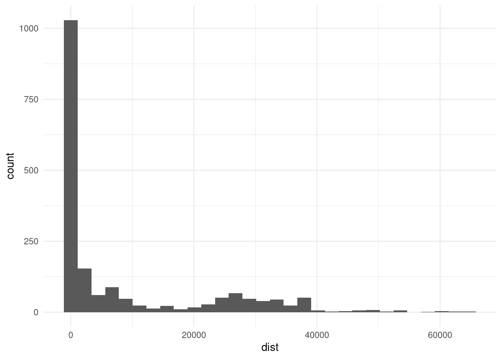

Code
library(arrow)
library(dplyr)
library(tidyr)
library(ggplot2)
library(sf)
library(terra)
set_theme(theme_minimal())This chapter tracks the provenance of, and access to, environmental covariates. Depth, sea surface temperature, and chlorophyll a data are location specific and thus specific to the location dataset that is being used. We will use weekly median positions of striped bass as an example location dataset in those instances, but data for other species will be processed similarly.
library(arrow)
library(dplyr)
library(tidyr)
library(ggplot2)
library(sf)
library(terra)
set_theme(theme_minimal())sb_file <- file.path(
Sys.getenv("DATA_DIR"),
"data/derived/striped_bass.parquet"
)
sb <- open_dataset(sb_file) |>
filter(latitude > 34) |> # detections almost definitely wrong and needs to be removed
group_by(transmitter, year, wk) |>
summarize(
med_lon = median(longitude, na.rm = TRUE),
med_lat = median(latitude, na.rm = TRUE)
) |>
ungroup() |>
distinct(med_lon, med_lat, year, wk) |>
collect()The NAO index can be accessed at the National Weather Service’s Climate Prediction Center.
nao <- "https://ftp.cpc.ncep.noaa.gov/cwlinks/norm.daily.nao.cdas.z500.19500101_current.csv" |>
read.csv()
write.csv(nao, "data/RAW/nao.csv", row.names = FALSE)nao <- read.csv(
file.path(
Sys.getenv("DATA_DIR"),
"data/RAW/nao.csv"
)
)
summary(nao) year month day nao_index_cdas
Min. :1950 Min. : 1.000 Min. : 1.00 Min. :-3.25400
1st Qu.:1969 1st Qu.: 4.000 1st Qu.: 8.00 1st Qu.:-0.53000
Median :1988 Median : 7.000 Median :16.00 Median : 0.05700
Mean :1988 Mean : 6.512 Mean :15.73 Mean : 0.02635
3rd Qu.:2007 3rd Qu.:10.000 3rd Qu.:23.00 3rd Qu.: 0.60774
Max. :2026 Max. :12.000 Max. :31.00 Max. : 2.75132
NAs :2 ggplot(nao) +
geom_line(
aes(
x = as.Date(sprintf("%d-%02d-%02d", year, month, day)),
y = nao_index_cdas
)
) +
labs(x = NULL, y = "NAO Index")
Gulf Stream Indices are available through the ecodata package (Beltz et al. 2026), “R data package developed by the Ecosystems Dynamics and Assessment Branch of the Northeast Fisheries Science Center for use in State of the Ecosystem (SOE) reporting”. The whole package can be installed, but we’ll just grab the source data directly.
download.file(
"https://github.com/NOAA-EDAB/ecodata/raw/refs/heads/main/data/gsi.rda",
"data/RAW/gsi.rda"
)load(file.path(
Sys.getenv("DATA_DIR"),
"data/RAW/gsi.rda"
))gsi |>
filter(Var == "gulf stream index") |>
ggplot() +
geom_line(
aes(
x = as.Date(paste0(Time, ".01"), format = "%Y.%m.%d"),
y = Value
)
) +
labs(x = NULL, y = "Gulf Stream Index")
gsi |>
filter(Var == "western gulf stream index") |>
ggplot() +
geom_line(
aes(
x = as.Date(paste0(Time, ".01"), format = "%Y.%m.%d"),
y = Value
)
) +
labs(x = NULL, y = "Western Gulf Stream Index")
We accessed depth data from the coastal relief model provided by the NOAA National Centers for Environmental Information (Coastal Relief Models (CRMs), n.d.). Data are at roughly 30\(m^2\) resolutions and split across three volumes: one for the northeast US, one for the southeast US, and one for Florida and the Gulf of Mexico.
base_url <- "NETCDF:https://www.ngdc.noaa.gov/thredds/dodsC/crm/cudem/crm_vol%i_2023.nc"depth_ne <- rast(sprintf(base_url, 1))
depth_neclass : SpatRaster
size : 25200, 43200, 1 (nrow, ncol, nlyr)
dimensions : lon, lat (43200, 25200}
resolution : 0.0002777778, 0.0002777778 (x, y)
extent : -77, -65, 39, 46 (xmin, xmax, ymin, ymax)
coord. ref. : lon/lat WGS 84 (EPSG:4326)
source : crm_vol1_2023.nc
varname : z (z)
name : z
unit : metersplot(depth_ne, maxcell = 2000, col = terrain.colors(100))
depth_se <- rast(sprintf(base_url, 2))
depth_seclass : SpatRaster
size : 25200, 54000, 1 (nrow, ncol, nlyr)
dimensions : lon, lat (54000, 25200}
resolution : 0.0002777778, 0.0002777778 (x, y)
extent : -83, -68, 32, 39 (xmin, xmax, ymin, ymax)
coord. ref. : lon/lat WGS 84 (EPSG:4326)
source : crm_vol2_2023.nc
varname : z (z)
name : z
unit : metersplot(depth_se, maxcell = 2000, col = terrain.colors(100))
depth_fl <- rast(sprintf(base_url, 3))
depth_flclass : SpatRaster
size : 28800, 28800, 1 (nrow, ncol, nlyr)
dimensions : lon, lat (28800, 28800}
resolution : 0.0002777778, 0.0002777778 (x, y)
extent : -84, -76, 24, 32 (xmin, xmax, ymin, ymax)
coord. ref. : lon/lat WGS 84 (EPSG:4326)
source : crm_vol3_2023.nc
varname : z (z)
name : z
unit : metersplot(depth_fl, maxcell = 2000, col = terrain.colors(100))
(GHRSST Level 4 MUR Global Foundation Sea Surface Temperature Analysis (V4.1) 2015)
Query needs date, latitude, and longitude. Right now we are using median position per week. Rather than just picking one day in the given week, we’ll take the mean SST at each position for the week.
sb_wk <- sb |>
filter(!is.na(year)) |>
mutate(
start_date = as.Date(paste(year, 1, 1, sep = "-")) + (wk - 1) * 7
) |>
uncount(7, .id = 'day') |>
mutate(date = start_date + day - 1, date = as.POSIXct(date)) |>
filter(year == 2014) |> #!!!
select(med_lon, med_lat, date) |>
arrange(date)extract_ghrsst.py
#!/usr/bin/env python3
# /// script
# dependencies = [
# "pandas",
# "xarray",
# "zarr",
# "dask",
# "s3fs",
# "fsspec",
# ]
# ///
import sys
import argparse
import pandas as pd
import xarray as xr
import dask
def main():
parser = argparse.ArgumentParser(description="Extract JPL MUR SST v4.1 data for spatial points.")
parser.add_argument("-i", "--input", default=sys.stdin, help="Input CSV file path (default: stdin)")
parser.add_argument("-o", "--output", default=sys.stdout, help="Output CSV file path (default: stdout)")
parser.add_argument("-w", "--workers", type=int, default=16, help="Number of Dask thread workers (default: 16)")
args = parser.parse_args()
# 1. Read input dataset
df = pd.read_csv(args.input)
df['date'] = pd.to_datetime(df["date"])
# 2. Open S3 Zarr store
sys.stderr.write("Opening S3 Zarr store...\n")
ds = xr.open_zarr(
"s3://mur-sst/zarr-v1",
storage_options = {
"anon": True,
"client_kwargs": {"region_name": "us-west-2"},
"default_fill_cache": False
},
consolidated = True
)
# Spatial bounding box (+/- 0.02 deg buffer)
min_lat, max_lat = df['med_lat'].min() - 0.02, df['med_lat'].max() + 0.02
min_lon, max_lon = df['med_lon'].min() - 0.02, df['med_lon'].max() + 0.02
results = []
for yr, sub_df in df.groupby(df['date'].dt.year):
sub_df = sub_df.copy()
unique_dates = sub_df['date'].drop_duplicates().sort_values().values
sys.stderr.write(f"Processing {yr}: {len(unique_dates)} dates, {len(sub_df)} rows...\n")
with dask.config.set(scheduler='threads', num_workers=args.workers):
cube = (
ds['analysed_sst']
.sel(lat=slice(min_lat, max_lat), lon=slice(min_lon, max_lon))
.sel(time=unique_dates, method="nearest")
.load()
)
extracted = cube.sel(
time = xr.DataArray(sub_df['date'].values, dims="points"),
lat = xr.DataArray(sub_df['med_lat'].values, dims="points"),
lon = xr.DataArray(sub_df['med_lon'].values, dims="points"),
method = 'nearest'
)
sub_df['sst_celsius'] = (extracted - 273.15).values
results.append(sub_df)
final_df = pd.concat(results, ignore_index=True)
final_df['year'] = final_df['date'].dt.year
final_df['wk'] = ((final_df['date'].dt.day_of_year - 1) // 7) + 1
final_df = final_df.groupby(['med_lat', 'med_lon', 'year', 'wk']).agg(
sst_celsius=('sst_celsius', 'mean')
).reset_index()
final_df.to_csv(args.output, index=False)
if __name__ == "__main__":
main()
`</details>`
::: {.cell}
```{.r .cell-code}
sb_sst <- read.csv(
file.path(
Sys.getenv("DATA_DIR"),
"data/derived/sb_sst.csv"
)
)
head(sb_sst) med_lat med_lon year wk sst_celsius
1 37.06356 -76.09292 2014 49 10.173571
2 37.09695 -75.99200 2014 19 17.681143
3 37.09695 -75.99200 2014 20 18.886571
4 38.03300 -76.33550 2014 16 10.601143
5 38.03327 -76.33706 2014 14 7.361429
6 38.03327 -76.33706 2014 16 10.601143:::
Atlantic sturgeon and striped bass are anadromous species and so spend 1-2 months per year in estuaries. Unfortunately, observing system products do not usually resolve to the small spatial scales characteristic of spawning estuaries. We plan to use NOAA CO-OPs station data from within each estuary, with the assumption that these temperatures will represent the entire system.
We derived distance from shore by calculating the Euclidean distance between weekly median locations in the rotated plane and the similarly-rotated Natural Earth 1:110m land polygon. We used the sf::st_distance for these calculations.
download.file(
"https://naciscdn.org/naturalearth/110m/physical/ne_110m_land.zip",
"data/RAW/ne_110.zip"
)land <- st_read(file.path(
"/vsizip",
Sys.getenv("DATA_DIR"),
"data/RAW/ne_110.zip"
))Reading layer `ne_110m_land' from data source `/vsizip/../../data/RAW/ne_110.zip' using driver `ESRI Shapefile'
Simple feature collection with 127 features and 3 fields
Geometry type: POLYGON
Dimension: XY
Bounding box: xmin: -180 ymin: -90 xmax: 180 ymax: 83.64513
Geodetic CRS: WGS 84ggplot(land) +
geom_sf()
rotated_projection <- open_dataset(sb_file) |>
filter(longitude != 0) |> # Idiosyncrasy of this data, will be changed.
mutate(latitude = abs(latitude)) |> # Idiosyncrasy of this data, will be changed.
distinct(latitude, longitude) |>
summarize(
lon0 = median(longitude, na.rm = TRUE),
lat0 = median(latitude, na.rm = TRUE)
) |>
collect() |>
(\(.) {
paste0(
"+proj=aeqd +lon_0=",
round(.$lon0, 3),
" +lat_0=",
round(.$lat0, 3)
)
})()
sb_positions <- open_dataset(sb_file) |>
filter(latitude > 34) |> # detections almost definitely wrong and needs to be removed
group_by(transmitter, year, wk, group) |>
summarize(
med_lon = median(longitude, na.rm = TRUE),
med_lat = median(latitude, na.rm = TRUE)
) |>
ungroup() |>
distinct(med_lon, med_lat) |>
collect() |>
st_as_sf(coords = c("med_lon", "med_lat"), crs = 4326) |>
st_transform(rotated_projection)land <- land |>
st_transform(rotated_projection)
ggplot(land) +
geom_sf()
dists <- st_distance(sb_positions, st_combine(land))
ggplot(data.frame(dist = as.numeric(dists))) +
geom_histogram(aes(x = dist))
We derived change in chlorophyll a from the data downloaded in Section 9.5.
We derived change in sea surface temperature from the data downloaded in Section 9.4.